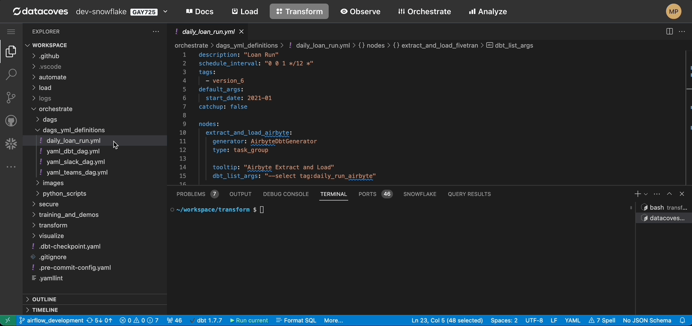

Generate DAGs from yml
You have the option to write out your DAGs in python or you can write them using yml and then have dbt-coves generate the python DAG for you.
Configure config.yml
This configuration is for the
dbt-coves generate airflow-dags
command which generates the DAGs from your yml files. Visit the
dbt-coves docs
for the full dbt-coves configuration settings.
dbt-coves will read settings from
<dbt_project_path>/.dbt_coves/config.yml
. We must create these files in order for dbt-coves to function.
Step 1:
Create the
.dbt-coves
folder at the root of your dbt project (where the dbt_project.yml file is located). Then create a file called
config.yml
inside of
.dbt-coves
.
Note
Datacoves' recommended dbt project location is
transform/eg)transform/.dbt-coves/config.yml. This will require some minor refactoring and ensuring that thedbt project pathin your environment settings reflects accordingly.
Step 2:
We use environment variables such as
DATACOVES__AIRFLOW_DAGS_YML_PATH
that are pre-configured for you. For more information on these variables see
Datacoves Environment Variables
-
yml_path
: This is where dbt-coves will look for the yml files to generate your Python DAGs.
-
dags_path
: This is where dbt-coves will place your generated python DAGs.
Place the following in your
config.yml file
generate:
...
airflow_dags:
# source location for yml files
yml_path: "/config/workspace/{{ env_var('DATACOVES__AIRFLOW_DAGS_YML_PATH') }}"
# destination for generated python dags
dags_path: "/config/workspace/{{ env_var('DATACOVES__AIRFLOW_DAGS_PATH') }}"
...
Tip
If using an Extract and Load tool in your DAG you can dynamically generate your sources; however, additional configuration will be needed inside the config.yml file. See Airbyte . For Fivetran contact us to complete the setup.
Create the yml file for your Airflow DAG
dbt-coves will look for your yml inside your
orchestrate/dags_yml_definition
folder to generate your Python DAGs. Please create these folders if you have not already done so.
Note
When you create a DAG with YAML the name of the file will be the name of the DAG. eg)
yml_dbt_dag.ymlgenerates a dag namedyml_dbt_dag
Let's create our first DAG using YAML.
Step 1
: Create a new file named
my_first_yml.py
in your
orchestrate/dags
folder.
Step 2: Add the following YAML to your file and be sure to change
description: "Sample DAG for dbt build"
schedule_interval: "0 0 1 */12 *"
tags:
- version_2
default_args:
start_date: 2023-01-01
owner: Noel Gomez # Replace this with your name
email: gomezn@example.com # Replace with the email of the recipient for failures
email_on_failure: true
catchup: false
nodes:
run_dbt:
type: task
operator: operators.datacoves.dbt.DatacovesDbtOperator
bash_command: "dbt run -s personal_loans"
Tip
In the examples we make use of the Datacoves Operators which handle things like copying and running dbt deps. For more information on what these operators handle, see Datacoves Operators
How to create your own task group with YAML
The example below shows how to create your own task group with YAML.
Field Reference:
-
type
: This must be
task_group - tooltip : Hover message for the task group.
- tasks : Here is where you will define the individual tasks in the task group.
Note
Specify the "task group" and "task" names at the beginning of their respective sections, as illustrated below:
nodes:
extract_and_load_dlt: # The name of the task group
type: task_group
tooltip: "dlt Extract and Load"
tasks:
load_us_population: # The name of the task
operator: operators.datacoves.bash.DatacovesBashOperator
# activate_venv: true
# Virtual Environment is automatically activated
cwd: "load/dlt/csv_to_snowflake/"
bash_command: "python load_csv_data.py"
# Add more tasks here
task_2:
...
Generate your python file from your yml file
To generate your DAG, be sure you have the yml you wish to generate a DAG from open.
Select
more
in the bottom bar.
Select
Generate Airflow Dag for YML
. This will run the command to generate the individual yml.

Generate all your python files
To generate all of the DAGs from your
orchestrate/dag_yml_definitions/
directory
-
Run
dbt-coves generate airflow-dagsin your terminal.
All generated python DAGs will be placed in the
orchestrate/dags
import datetime
from airflow.decorators import dag
from operators.datacoves.dbt import DatacovesDbtOperator
@dag(
default_args={
"start_date": datetime.datetime(2023, 1, 1, 0, 0),
"owner": "Noel Gomez",
"email": "gomezn@example.com",
"email_on_failure": True,
},
description="Sample DAG for dbt build",
schedule_interval="0 0 1 */12 *",
tags=["version_2"],
catchup=False,
)
def yml_dbt_dag():
run_dbt = DatacovesDbtOperator(
task_id="run_dbt", bash_command="dbt run -s personal_loans"
)
dag = yml_dbt_dag()